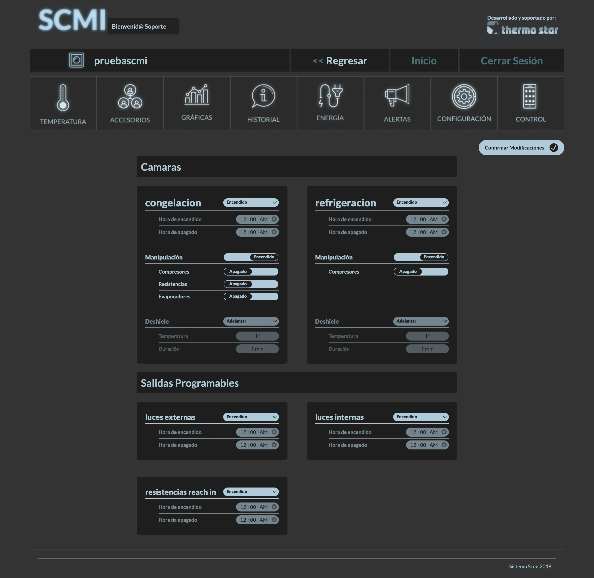

SCMI
June 2018
Web Based Self-Service Store Monitoring System made during my time as a contractor for Motus Guadalajara (2018-2021) in collaboration with Rycsa and Thermo Star. SCMI (Sistemas de Control y Monitoreo Inteligente) is an online system providing managers of self-service stores with the ability to monitor and control the state of fridges and other components in the store.
